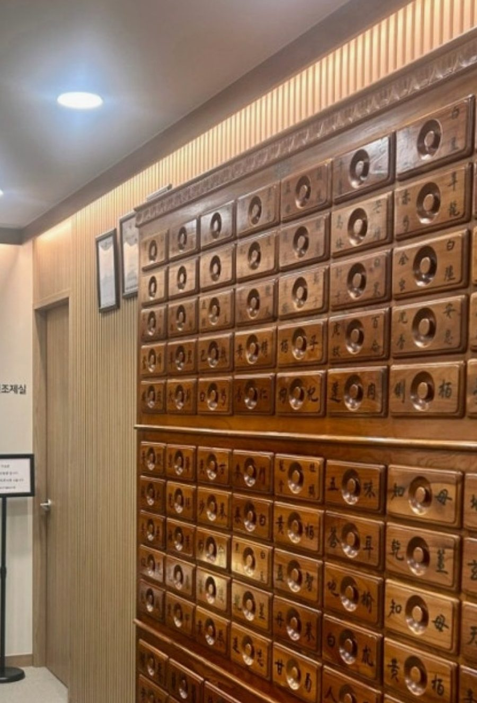
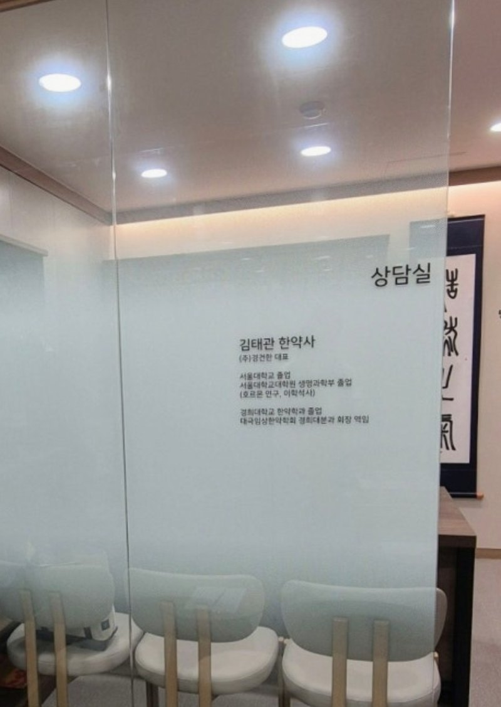
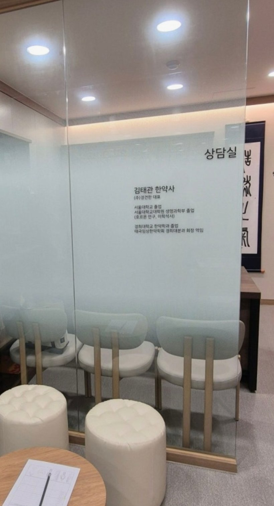
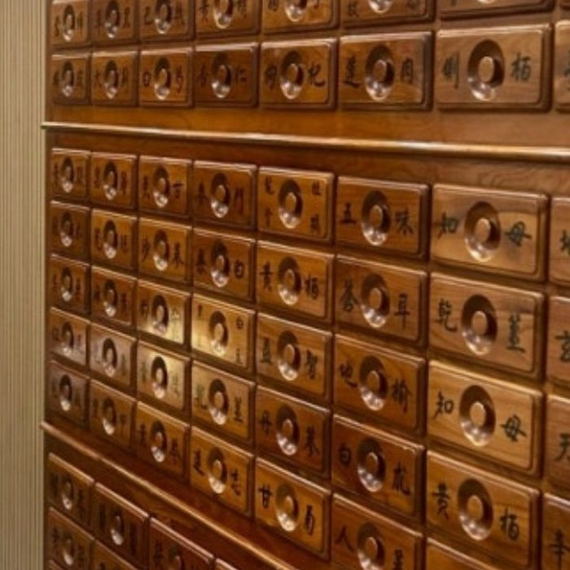
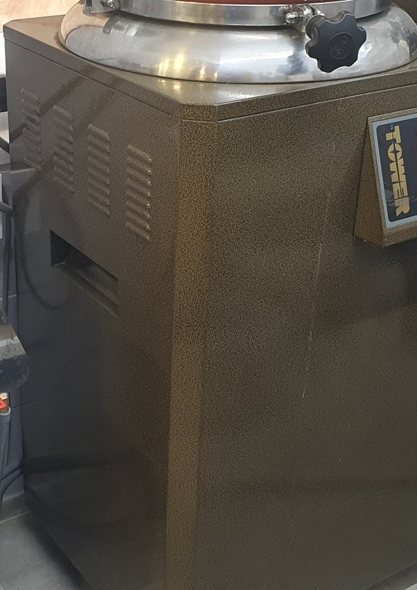

한약국이 하는 네 가지 일
아빠한약국은 약사법에 따라 한약사가 상담하고 조제하는 한약국입니다. 짓는 데서 끝나지 않고, 드시는 동안과 다 드신 뒤까지 함께 봅니다. 진단·치료가 필요한 경우 의료기관 진료를 먼저 권합니다.
건강 상담
체질과 생활 습관, 식사·수면·학습 리듬까지 상담실에서 일대일로 여쭙습니다.
한약 조제
한약사가 한약처방 범위에서 규격 약재로 직접 조제하고, 원내 탕전조제실에서 달입니다.
복약 지도
보관법과 복용 시간, 피할 음식, 복용 중인 양약과의 주의점까지 안내합니다.
경과 확인
복용을 시작한 뒤 불편한 점은 없는지 확인하고, 다 드신 뒤 상태를 다시 여쭙습니다. 필요하면 다음 상담에 반영합니다.
가장 많이 여쭙는
세 가지 이야기
대치역과 은마아파트 사이, 학원가 한가운데 있는 한약국입니다. 오래 한자리를 지키다 보니 자연스럽게 자주 듣는 이야기가 생겼습니다.
수험생 건강관리
책상 앞에 오래 앉는 아이들의 몸을 가장 많이 살핍니다.
여성 건강관리
아이를 데려오셨다가, 본인 이야기를 꺼내시는 분이 많습니다.
어르신 건강관리
복용 중인 약이 많을수록, 더 오래 여쭙고 더 신중하게 짓습니다.
※ 위 내용은 상담에서 자주 다루는 주제를 안내한 것이며, 특정 질환에 대한 효능·효과를 의미하지 않습니다. 질병의 진단과 치료는 의료기관의 영역입니다.
과학을 공부한 뒤,
한약을 공부했습니다

"약을 짓기 전에, 먼저 하루를 충분히 듣습니다."
- 학력서울대학교 졸업
- 학력서울대학교대학원 생명과학부 졸업 (호르몬 연구, 이학석사)
- 학력경희대학교 한약학과 졸업
- 활동태극임상한약학회 경희대분과 회장 역임
- 현재아빠한약국 대표 한약사
- 현재(주)경건한 대표
김태관 한약사
상담실에서 듣고,
탕전조제실에서 짓습니다
상담부터 조제, 탕전, 포장까지 한 공간에서 이루어집니다. 약장에 보관하는 모든 약재는 식품의약품안전처 규격품만 사용합니다.



상담실에서 체질·증상·생활을 여쭙고 상담 기록지를 함께 작성합니다.
한약사가 한약처방 범위에서 조제 내용을 정하고 설명드립니다.
약장의 약재를 저울로 계량해 직접 조제합니다.
원내 탕전조제실에서 달여 밀봉 포장하고, 보관법을 함께 드립니다.
복용 중 불편한 점과 다 드신 뒤 상태를 다시 여쭙습니다.
자주 하시는 질문
한약국은 한의원과 무엇이 다른가요?
상담은 어떻게 진행되나요?
복용 중인 양약이 있어도 되나요?
다 먹고 나면 다시 와야 하나요?
은마아파트 북문에서
오른쪽으로 200m
- 주소서울 강남구 영동대로57길 28, 상가동 2층
- 지하철대치역(3호선) 3번 출구에서 866m
- 도보은마아파트 북문에서 오른쪽으로 약 200m 직진
- 전화02-6954-0850
- 주차인접 공영주차장 이용 가능 · 미리 전화 주시면 주차를 안내해 드립니다
- 결제신용카드 · 간편결제 · 계좌이체
| 월 – 목 | 10:00 – 19:00 |
| 금 | 10:00 – 19:00 (공휴일 휴무) |
| 토 | 10:00 – 14:00 · 오후 2시 이후 예약상담 |
| 일 | 정기휴무 · 종일 예약상담 가능 |